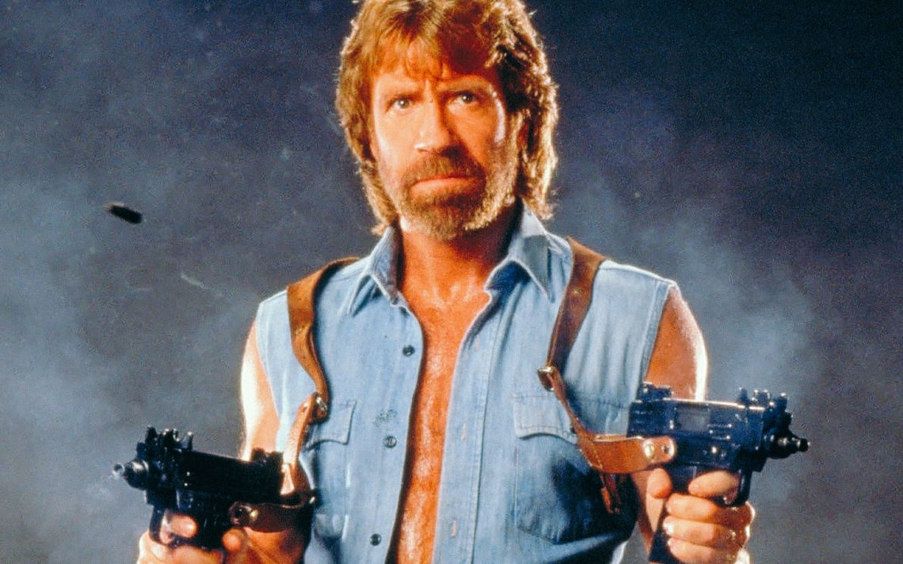
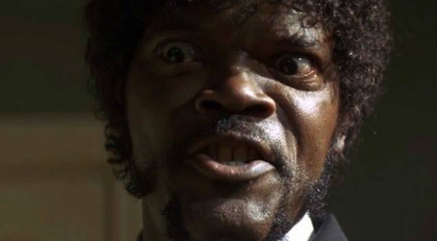
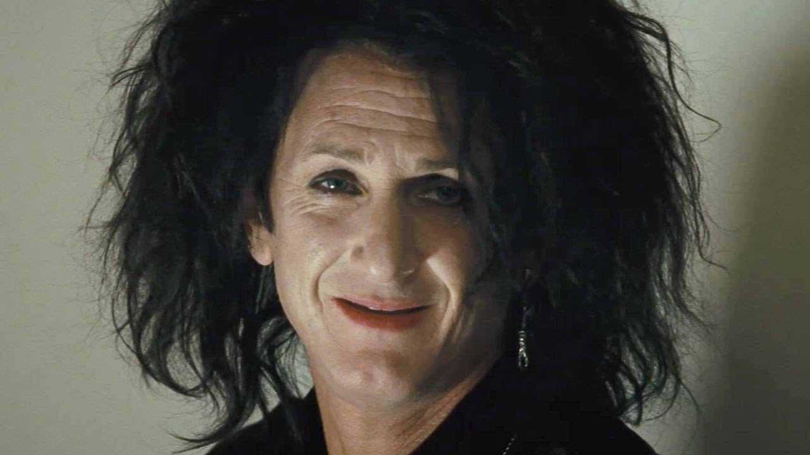

Chuck Norris
"As Matt Hunter"
Chuck Norris doesn't churn butter. He roundhouse kicks the cows and the butter comes straight out. Contrary to popular belief, America is not a democracy, it is a Chucktatorship. Fool me once, shame on you. Fool Chuck Norris once and he will roundhouse you in the face. The quickest way to a man's heart is with Chuck Norris' fist. Chuck Norris is currently suing NBC, claiming Law and Order are trademarked names for his left and right legs. Chuck Norris will attain statehood in 2009. His state flower will be the Magnolia. Chuck Norris is the only man to ever defeat a brick wall in a game of tennis, Chuck Norris is the reason why Waldo is hiding.
Samuel L Jackson
"As Jules Winnfield"
Look, just because I don't be givin' no man a foot massage don't make it right for Marsellus to throw Antwone into a glass motherfuckin' house, fuckin' up the way the nigger talks. Motherfucker do that shit to me, he better paralyze my ass, 'cause I'll kill the motherfucker, know what I'm sayin'?
Sean Penn
"As Cheyenne"
I can't explain why I didn't talk to my father for 30 years. I must have thought that there was a mutual contempt. When I was 15, I decided that he didn't love me because I made up my eyes exactly as I do now. When you're a kid, it's very hard to back off from your decisions. But I pretended to be a kid for too long. And only now that I realize that a father can help and love his child, that I have no kids makes me really, really sick.
